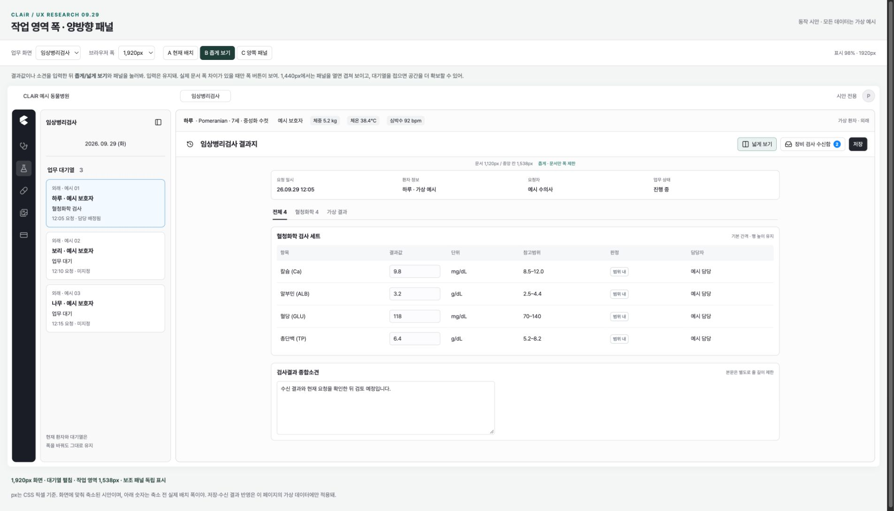

메인 작업 영역 약 1,543px
현재 브라우저의 1,925 × 1,254 CSS px 뷰포트에서 메인 작업 영역은 1,543px. 패널이 닫힌 상태에서 표와 입력 영역이 남은 폭 전체로 늘어나.
진료/차트 · 임상검사 · 조제/처치 · 영상 · 수납
현재 작업의 폭과 양쪽 보조 패널을 다시 설계하는 제안
승욱의 문제 제기에서 출발한 조사와 시안.
서비스 적용 전 검토 단계 · 루멘 작성
임상검사부터 문서 최대 1,120px의 좁게 보기를 시험하는 것을 추천해. 왼쪽 이력은 280px, 오른쪽 장비 수신함은 336px로 두고, 환자 정보 아래 같은 작업 영역에서 여닫자.
임상·조제·수납의
좁게 보기 후보 상한
왼쪽 이력 / 오른쪽 보조 패널
제안 폭 · CSS 픽셀
패널을 나란히 둘 때
보호할 중앙 칸의 후보 최소 폭
확인된 화면 사실과 예상 효과를 구분했어.
사용자 연구나 임상 업무 성과 측정은 아직 수행하지 않았어.
현재 브라우저의 1,925 × 1,254 CSS px 뷰포트에서 메인 작업 영역은 1,543px. 패널이 닫힌 상태에서 표와 입력 영역이 남은 폭 전체로 늘어나.
항목명 → 결과값 → 참고범위 → 판정 → 담당자 사이가 크게 벌어져 있어. 종합소견 입력란도 작업 영역을 따라 길어져.
왼쪽 이력은 환자 헤더 아래 안쪽에 있고, 장비 수신함은 워크스페이스 바깥 열에 있어. 공통 환자·보호자 프로필도 이 오른쪽 슬롯을 사용해.
문서 폭을 줄이면 같은 행의 관계를 확인하기 쉬워질 가능성이 있어. 수신함을 안으로 넣으면 “환자 정보”와 “이번 검사 작업”의 역할도 구별하기 쉬워질 거야.
근거: 사용자 첨부 화면, 현재 임상검사 화면의 읽기 전용 확인, src/shell/layout-contract.ts, src/shell/workspace-frame.tsx, src/features/lab-imaging/module.tsx. 로컬 소스에는 기존 WIP가 있어 배포본과 동일한 SHA라고 가정하지 않았어. 측정 폭은 CSS px이며 첨부 이미지의 픽셀·파란 선택 영역 폭과 달라.
서비스의 공식 기능 설명과 디자인 시스템을 확인했어. 문서에서 확인한 동작을 비교한 조사이며, 각 서비스의 인증 화면을 직접 사용한 비교 테스트는 아니야.
Notion은 Full width 전환을 제공하고, 데이터베이스 페이지는 Side peek·Center peek·Full page로 열 수 있어. Side peek 상태에서는 원래 목록도 계속 조작할 수 있어. 폭 도움말 [1] · 페이지 열기 [2]
CLAiR 적용 해석 → 문서 폭 전환과 이력·수신함 열기를 독립적으로 제공. 이력 확인 때문에 현재 작업을 떠나지 않게.
Microsoft는 메시지 목록에서 선택한 내용을 읽기 창에 표시하고, 읽기 창의 위치를 오른쪽·아래로 바꾸거나 끌 수 있도록 설명해. Reading Pane [3]
CLAiR 적용 해석 → 수신 결과 목록과 현재 입력을 함께 확인. 패널 내부는 단일 열로, 중앙 결과표는 기존 구조로.
Linear Peek은 이슈·프로젝트 목록이나 보드에서 상세를 미리 보여주고, 방향키로 인접 항목을 확인하거나 Esc로 닫을 수 있어. Peek preview [4]
CLAiR 적용 해석 → 이력은 현재 입력을 유지하는 참고 영역으로. Linear의 키보드 전용 진입을 그대로 복사하지 않고 눈에 보이는 버튼을 제공.
공식 Material Components 문서는 Standard sheet의 동시 조작, Coplanar sheet의 중앙 영역 축소, Modal sheet의 배경 조작 차단을 구분해. 좁은 화면에서는 Coplanar 배치를 권하지 않아. 공식 SideSheet 문서 [5]
CLAiR 적용 해석 → 공간이 충분하면 나란히. 중앙을 보호할 수 없으면 한 패널을 모달로. Android의 dp나 샘플 폭을 웹 px 기준으로 가져오지는 않아.
Carbon의 UI shell right panel은 시스템 수준의 추가 동작·내용을 위한 패널이며, 화면 오른쪽에 붙고 콘텐츠 위에 떠. 한 번에 하나만 확장해. UI shell right panel [6]
CLAiR 적용 해석 → 장비 결과는 현재 검사 작업에 종속되므로 작업 내부에 배치. Carbon의 전역 패널을 양쪽 업무 패널의 직접 기준으로 쓰지 않아.
W3C의 WCAG 1.4.8은 텍스트 블록의 폭을 80자, CJK는 40자 이하로 조절할 수 있는 수단을 다루는 AAA 기준이야. 중앙 문서 전체를 40자로 제한하라는 뜻은 아니야. W3C [7]
제안: 한글 소견·SOAP 본문은 별도로 최대 40ic를 시험. 14px에서 약 560px라는 값은 폰트에 따라 달라지는 근사치야. 이 조치 하나로 WCAG 준수를 주장하지 않아.
NN/g는 표의 주요 업무를 구분하고, 넓은 단일 레코드 표가 읽기·편집을 어렵게 할 수 있다고 설명해. Data Tables [8]
제안: 핵심 열을 유지하면서 문서 폭을 제한. 많은 열을 함께 비교하는 Order·청구 업무에는 넓게 보기를 제공. 좁게 보기에 맞춰 열을 없애거나 글자를 줄이지 않아.
조사 한계: 공식 도움말은 기능의 존재를 입증하지만 CLAiR 업무 효율 개선을 입증하지는 않아. 공개 사용자 불만은 빈도 근거로 사용하지 않았어. Material 3 사이트 본문은 동적 페이지라 직접 텍스트 확인이 제한되어 공식 저장소 문서로 보완했어. 조회일 2026.09.29.
[좁게 보기] [장비 검사 수신함 2] [기존 작업 행동]을 배치. 사용 가능 문서 폭이 모듈 상한보다 넓을 때만 표시. 좁게 상태에서는 버튼이 넓게 보기로 바뀌며 상태를 보조기술에도 알림.픽셀은 기기 해상도가 아니라 브라우저의 CSS 픽셀.
문서 폭 = min(모듈별 상한, 남은 중앙 칸 − 좌우 패딩 32px).
| 후보 | 기대 장점 | 부담 | 선택 |
|---|---|---|---|
| 960px | 시선 거리가 짧고 문서 읽기에 유리 | 표·상단 행동 줄바꿈과 가로 스크롤 가능성 | 사용자 비교 후보 |
| 1,120px | 핵심 결과표와 작업 정보의 균형 | 다수 열 비교에는 넓게 전환 필요 | 임상·조제·수납의 추천 시작값 |
| 1,280px | 정보·단일 자료 비교에 여유 | 짧은 문서에는 폭이 여전히 넓을 수 있음 | 영상 보고서의 후보 |
대기열 펼침: 셸 약 380px + 작업 프레임 테두리 2px.
작업 영역 A = 화면 폭 V − 382px.
양쪽 나란히: A − 280 − 336 ≥ 880.
이 계산에서는 화면 폭 약 1,878px 이상에서 양쪽 나란히 배치가 가능해. 셸 폭이나 줌이 바뀌면 기준도 바뀌므로 실제 중앙 영역 폭으로 판단해야 해.
중앙 칸 880px은 패딩 32px을 포함해.
문서로는 최소 848px을 확보하는 후보야.
결과표는 열 콘텐츠 후보 합계 720px + 셀 좌우 패딩 96px = 816px, 카드 안쪽 여백·테두리 약 26px, 중앙 좌우 패딩 32px로 약 874px. 880px으로 반올림한 시작값이야. 실제 구현 전 긴 항목·참고범위·담당자까지 실측해서 보정해야 해.
| 화면 폭 / 대기열 펼침 | 작업 영역 A | 양쪽을 넣으면 중앙 칸 | 제안 동작 |
|---|---|---|---|
| 1,366px | 984px | 368px | 한 패널을 겹쳐 표시 |
| 1,440px | 1,058px | 442px | 한 패널을 겹쳐 표시 |
| 1,600px | 1,218px | 602px | 한 패널은 나란히 가능 · 둘이면 겹쳐 표시 |
| 1,920px | 1,538px | 922px | 양쪽 나란히 · 문서 약 890px |
| 2,560px | 2,178px | 1,562px | 양쪽 나란히 · 좁게 문서는 최대 1,120px |
| 모듈 | 좁게 상한 / 시작 모드 제안 | 왼쪽 / 오른쪽 역할 | 넓게 보기의 필요 |
|---|---|---|---|
| 임상검사 | 1,120px · 좁게 | 검사 이력 / 장비 수신함 오른쪽 패널은 현재 기능의 배치 변경 | 검사 결과 다수 열·기간 비교 |
| 진료/차트 | 1,040px · SOAP 좁게 | 진료 이력 / 참고 자료 후보 동일한 오른쪽 모듈 슬롯은 현재 없음 | Plan / Order의 기존 25개 열 확인 표 열을 축약·삭제하지 않음 |
| 조제/처치 | 1,120px · 좁게 | 수행 이력 / 수행 상세 후보 현재 drawer와 중복 여부 검토 필요 | 예정량·실제량·수행 정보 대량 비교 |
| 영상 | 1,280px · 보고서 좁게 영상 확인은 넓게 | 영상 이력 / 기존 종합소견·첨부 | 영상 확대·다중 비교 진단 영상에 폭 제한을 강제하지 않음 |
| 수납 | 1,120px · 좁게 | 수납 이력 / 청구 확인 후보 현재 오른쪽 결제 기능은 별도 검토 | 많은 청구 열·조정 내역 확인 금액·주요 결제 행동은 중앙 유지 |
양쪽 패널의 공통 배치만 확장하는 제안이야. 모든 모듈에 임상 수신함 기능을 복제하지 않아. 특히 차트·조제의 새로운 보조 자료 역할과 수납의 결제 배치는 이번 화면 시안만으로 확정할 수 없어. 적용 순서: 임상 → 차트 SOAP·조제 → 영상 보고서·수납.
현재 화면의 형태·중성색·모서리·작업 정보 구조를 참고해 만든 HTML 시안이야. 아래 A도 실제 배포 화면 캡처가 아닌 동일한 가상 내용으로 현재 배치를 재구성한 비교안이야.

다섯 업무 화면, 폭 전환, 양쪽 패널, 대기열 접기, 입력 유지, 작은 화면의 겹쳐 보기를 확인할 수 있어.
추천 확인 순서: 임상에서 결과값 수정 → 넓게/좁게 전환 → 양쪽 패널 열기 → 1,440px 선택 → 패널 닫기 → 대기열 접기. 영상에서는 보고서와 영상 보기의 권장 모드 차이를 확인해봐. 가상 결과를 반영하는 버튼은 시안의 입력만 바꿔.
폭 전환으로 문서 재마운트·선택 환자 변경·임상 데이터 재저장·검사 확정이 일어나지 않아야 해. 입력, 포커스, 스크롤, 표 고정 열을 유지해.
시안의 시작 상태는 좁게·패널 닫힘. 실서비스의 최초 진입 패널 기본값은 현행 정책을 유지하고 폭 선호를 독립 설정하는 방향이야. 실서비스에는 사용자 × 워크스페이스 × 모듈별 보기 선호 저장을 검토. 폭 선호와 환자별 패널 선택 상태를 구분하고, 기존 aside·right URL 상태를 새 폭 상태에 재사용하지 않아.
패널 버튼은 이름·건수·aria-expanded·aria-controls 제공. 현재 보기 상태를 스크린리더에도 전달. 패널 내부에 항상 보이는 닫기와 제목을 둬.
나란히 있는 패널은 포커스를 가두지 않아. 모달은 배경 조작 차단, Tab 순환, Esc 닫기, 진입 버튼으로 포커스 복귀. 프로필 모달의 기존 포커스 규칙도 유지해.
실제 구현 단계에서는 1,366·1,440·1,600·1,920·2,560px 및 브라우저 200% 확대에서 확인해야 해. 남은 중앙 칸을 기준으로 겹쳐 보기 전환. 이때 최근 패널 하나만 표시하고 상태를 알려.
필수 금액·검사 판정·저장 행동을 잘라내지 않아. 표 가로 스크롤은 표 안에 한정하고, 툴바 줄바꿈과 컨텍스트 정보 접근을 보장.
좁게 보기를 기존 “기본 간격”과 같은 행 밀도 설정과 분리. 본문 줄 길이는 별도 제한. 색만으로 검사 판정이나 선택 상태를 전달하지 않아.
폭 버튼을 눌렀을 때 현재 문서 폭과 실제 목표 폭 사이를 180ms ease-out으로 전환. 가운데 정렬을 유지해 양쪽 가장자리가 함께 움직이며, 글자·입력칸·행 높이는 확대하거나 축소하지 않아. 페이드나 튀는 효과는 추가하지 않아.
시안은 폭 전환만 애니메이션 처리. 창 크기·패널·대기열 변화에 따른 재배치는 즉시 적용하고, prefers-reduced-motion에서는 폭 전환도 즉시 적용. 빠르게 다시 누르면 현재 진행 폭에서 새 목표로 전환. 입력은 재생성하지 않아. 패널 자체의 출입 모션은 실제 구현 단계의 별도 확인 항목이야. 새 수신 건수만 알리고 패널을 자동으로 열지 않아.
수의사·검사 수행·원무 역할을 포함한 5–8명에게 기존 폭, 960px, 1,120px, 1,280px의 동일 업무를 순서를 바꿔 보여줘. 이 인원은 정성 평가용 제안이며 통계적 효과를 보장하지 않아.
항목·결과·판정 찾기, 이전 검사 확인, 수신 결과와 현재 요청 대조, 소견 작성. 완료 시간, 잘못 본 행·단위, 가로 스크롤, 패널 전환 횟수, 주관적 피로를 기록해.
검토 누락·입력 유실 없이 선호와 수행 결과가 개선되는 폭을 선택. 차트의 많은 열, 영상 비교, 수납 금액 검토는 각 역할의 별도 업무로 확인한 뒤 확장.
① 1,120px 후보를 임상검사 파일럿의 출발점으로 쓸지 ② 수신함을 환자 헤더 아래 안쪽으로 옮길지 ③ 공간 부족 시 한 패널의 겹쳐 보기를 허용할지.
후속 승인 반영: 사용 가능 문서 폭이 모듈 상한보다 넓을 때만 폭 버튼을 표시하고, 숨김 중에도 선택 모드를 유지하는 방향을 보고서와 시안에 반영했어. 기본 모드를 일괄 변경하거나 새로운 차트·조제 보조 기능을 만드는 결정은 분리하는 게 좋아.
공통 셸: workspace-frame.tsx의 환자 헤더 아래 작업 영역을 [contentAside | center | contentRight]로 구성. 프로필은 현재 공통 오른쪽 슬롯과 분리. 기존 EmrContentAsidePanel, EmrRightPanel, 작업 헤더·버튼을 우선 재사용하고 새 공유 API를 먼저 만들지 않아.
모듈: 임상 수신함의 내용·연결·저장 로직을 유지한 채 슬롯 위치만 변경. layout-contract.ts에서 후보 폭을 정의하고 실제 콘텐츠 폭으로 적응. 폭 선호는 layout-store.ts의 패널 상태와 독립된 모듈별 UI 상태로 검토.
검증: 입력 중 폭·패널·대기열 전환, 환자 전환, 새 수신, 프로필과 수신함 공존, 빈 목록·오류·긴 한국어 이름, 모든 핵심 열 접근, 포커스 복귀, 확대. 실제 적용 단계에서는 관련 브라우저 회귀와 type/lint/build를 수행.
범위 밖: 검사 매칭·수신 API, DB/RLS, 권한, 결과 저장·확정, 처방·조제 계산, 결제·환불, 프로필 데이터, 임상 정책 변경. 자료 패널의 배치는 서버·DB 권한을 대신하지 않아.
현재 단계: 조사·시안 파일만 작성. 앱 소스·공유 토큰·API·배포는 변경하지 않았어. 반복 패턴 구현 전 프로젝트의 docs/design/system/ux-ui-research-before-implementation.md에 따라 범위와 공유 계약을 확정하고 실행 작업을 연결해야 해. 외부 이슈 생성·게시도 이번에 수행하지 않았어.
다섯 모듈 표시, 1,366–2,560px의 가상 CSS 레이아웃, 폭 전환 후 결과·소견 입력 유지, 양쪽 패널, 1,440px 겹쳐 보기, Esc 닫기와 진입 버튼 포커스 복귀, 대기열 접기로 공간 확보, 영상 보기의 넓게 전환, 가상 수신 결과의 명시적 반영, 프로필과 업무 패널 상태 분리를 브라우저에서 확인했어. 후속 검증에서는 실제 사용 가능 폭에 따른 버튼 표시, 숨김 중 보기 모드 유지, 모듈별 상한, 180ms 전환 중간 폭과 최종 폭, 빠른 재전환, 포인터·키보드 활성화 후 입력 유지를 확인했어.
이 검증은 정적 시안에 한정돼. 실제 환자 업무, 배포 코드, 200% 브라우저 확대, 실제 영상 자료, 사용자별 영구 선호 저장은 검증하지 않았어. 시안 검증 기록
서비스별 숫자나 화면 폭을 측정해서 1,120px을 도출한 것은 아니야. 공식 사례는 상호작용 패턴의 근거이고, 폭 후보는 CLAiR의 실제 셸 구조를 기준으로 루멘이 제안한 값이야.
현재 UI 내부 근거: 읽기 전용 브라우저 관찰과 로컬 셸·모듈 레지스트리·레이아웃 상태·차트 25개 Order 열 계약. 공개 출처 조회: 2026.09.29. 생성물에는 환자·보호자·직원·금액을 모두 가상 예시로 사용했어.